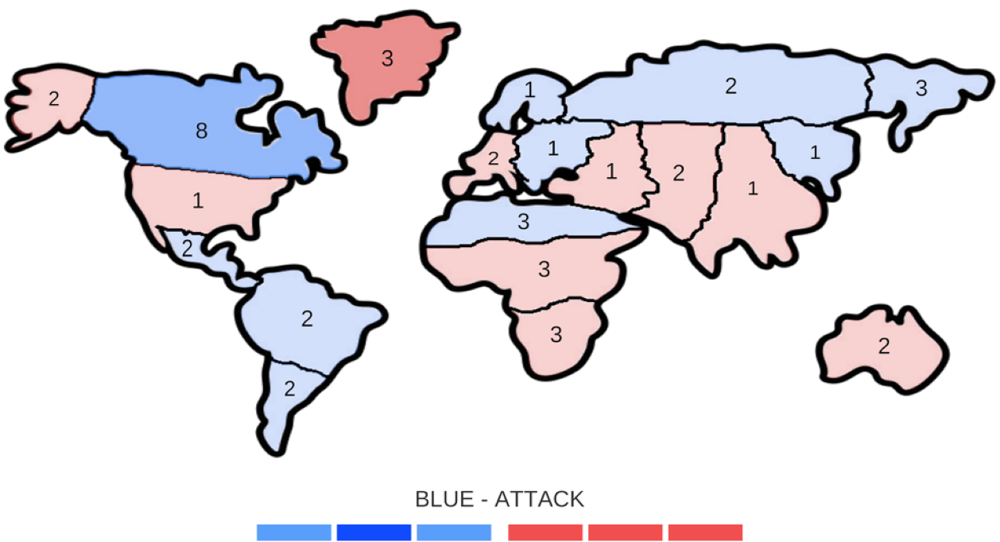

Galactic Conquest | Unity | Computer Networking

I created a Risk-like conquest map and game mechanics that then dive into a third person, 3D, unique fighter jet dog-fight, where your gameplay decides the outcome of the battle. The best part: it's fully host-client networked using the package Mirror and releasing on Steam!
This long project left me with a new understanding for the preproduction importance of having a solid plan and scope. While some of my design ideas to have a FPS-Risk style game were sound, the plan wasn't fully formed.